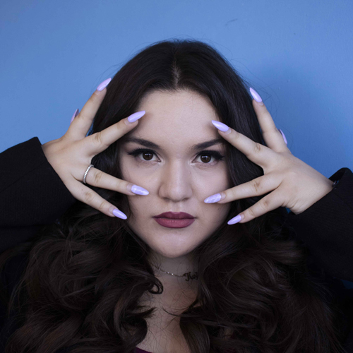

Throughout my time here at Humber, I have done many different things. From web design, graphic design, photography and more. Today I wanted to showcase some of the photos I have taken during my time here at Humber that I am particularly proud of. With little to no previous knowledge of how to take a good portrait, I was able to learn several stunning techniques that I believe have elevated my photography. The following slideshow is of a few photos that stand out to me above the rest when I look at my photography.

3D Renders and Animation
Below are some examples of current and past 3D renders and/or animations I have done. Next year I will be transitioning from a Media Communications student into a Visual Effects student at the TTTC based out of Vancouver. As a result, I have been spending more time attempting to learn 3D modelling and effects in Houdini. I have attempted to showcase a variety of effects and skills within from Smoke simulations to rigid body dynamics, as well as a short animated clip from Adobe Flash that I made for fun!